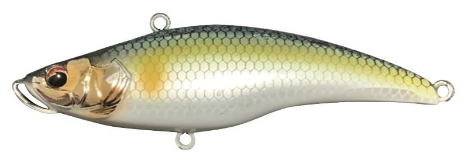
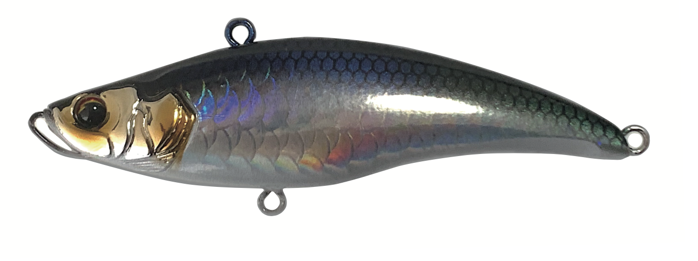
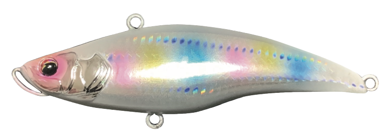
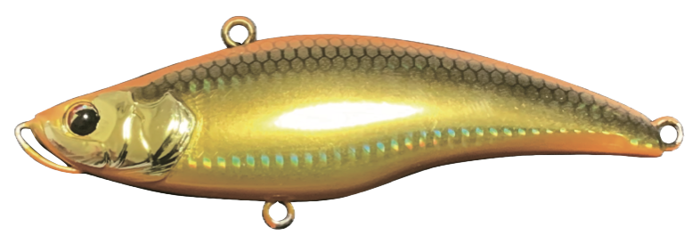

MALIERA 68S
MALIERA（マリエラ）はトレフルクリエーションを代表するバイブレーション。
友人との釣行の際に使うと嫌われるほど釣れる！？ エリア問わず大人気のルアーです。
ハワイ語で「静か」を表す"MALIE"と英語で「時代」を意味する"ERA"を組み合わせた造語から命名されています。
- メーカー
- TREFLE CREATION
- 長さ
- 68mm
- 重さ
- 18g
- タイプ
- シンキング
- アクション
- バイブレーション
- ターゲット魚種
- シーバス
マリエラ68Sの特徴
-
手元への伝わりが少ない静かなバイブレーション
釣り人の存在がサカナに気づかれないように手元への振動を抑えた設計。釣り竿～ラインの違和感を作らないので釣れます。
-
ヘッドについたバンパーで根がかりしにくい
バンパーがクッションになり、根がかりが軽減されています。

使い方・得意な状況
使用シーンは河川や港湾などです。
使い方は基本的にただ巻きで、手元に振動が伝わるか伝わらないかぐらいがベストです。
振動を感じなくても水中では猛アピールしています！
ワンポイント
ストラクチャーについているスレたシーバスを狙うのがオススメです。
根がかりに恐れずに攻めてみましょう！
人気カラー

トレフルアユ
トレフルクリエーションを代表するカラー

メタリックローチ
人気No.1カラー。HPショップと特約店のみの限定カラー

錦飴
シーバス定番食。ホワイトベースはよく釣れる。

オレンジゴールド
朝夕のマズメ時に絶対なる釣果を叩き出すカラー
画像出典:Trefle creation公式HP
trefle creationのルアー
- MIRAGE JT SERIES
- RAFALE JT SERIES
- DIVOLA SERIES
- LANAKERA SERIES